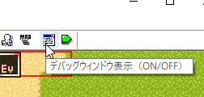
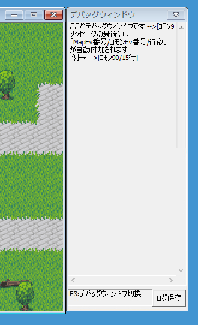
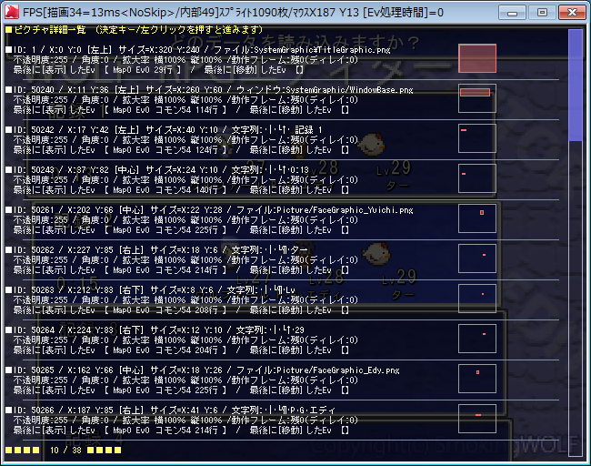
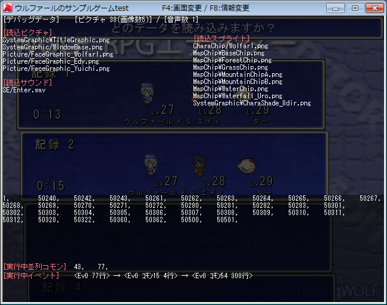
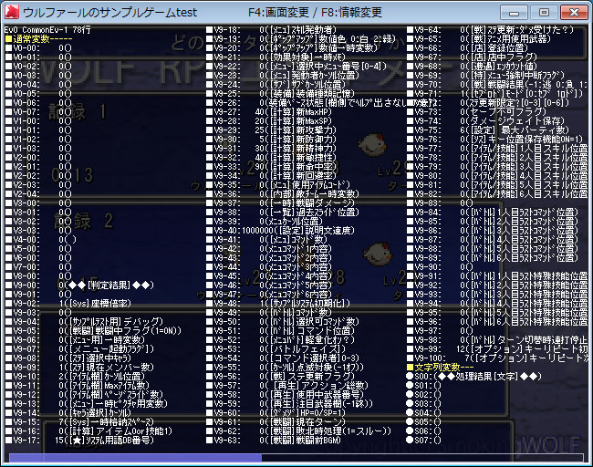
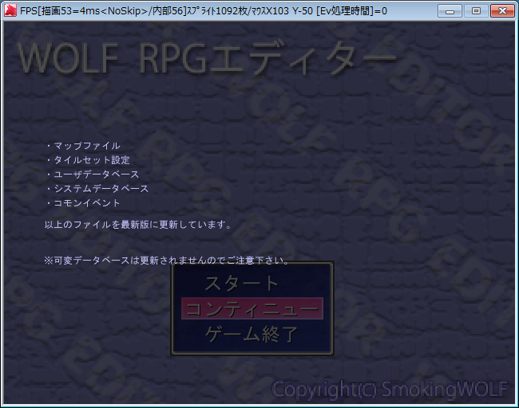

【デバッグコマンド一覧】
テストプレイ時にはGame.exe上で次のようなコマンドが使えます。
テストプレイとしてではなく、Game.exeを直接起動したときにはこれらのコマンドが使えないので注意してください。
・デバッグウィンドウ
- 「デバッグ文」コマンドの裏技 ValWatch(変数監視)とPictureWatch(ピクチャ監視)
・デバッグウィンドウ表示（F3）
・ピクチャ詳細一覧（F7）
・デバッグデータ（F8）
・変数一覧（F9）
・データ再読み込み（F11）
・SysS 55：[読]Ev実行経路
[ デバッグウィンドウ ]
エディタの「ゲーム設定」→「デバッグウィンドウ使用」にチェックマークを入れると使用可能です。

オンにしていると次のようなデバッグウィンドウが表示されます。
または、テストプレイ時にF3キーを押すことでも表示することができます。

このチェックが入っていても、Game.exeを直接起動した場合にはデバッグウィンドウは表示されません。
デバッグウィンドウはテストプレイ時のみ機能します。
「文字の表示」でデバッグ文として書き込まれた文字列や、エラー時のレポートなどが表示されます。
メッセージの最後には、デバッグの追跡を容易にする目的で、「MapEv番号/コモンEv番号/行数」が自動付加されます。
・「ログ保存」ボタン ]
デバッグウィンドウの「ログ保存」ボタンを押すとデバッグウィンドウ内の文字列をテキストに保存できます。
テキストはLog.txtという名前でGame.exeと同じフォルダに保存されます。
[ 「デバッグ文」コマンドの裏技 ValWatchとPictureWatch ]
「文章の表示」コマンドの「デバッグ文」で以下の入力を行うと、変数やピクチャの監視ができます。
●「デバッグ文」の隠しコマンド1 【変数監視機能 ValWatch】
たとえばデバッグ文に
と入れると、「変数操作」コマンドなどで指定した変数に直接アクセスされたとき、「デバッグウィンドウ」に以下のように表示されます。
【見本】 ※通常変数9に4が格納されたとき
# ValWatch=> 2000009 = 4
-->[MapEv14/4行]
※またこの機能を使うと「コモンイベントの高速化」がオフになるので、
コモンイベントの処理時間が平均で「元の6～10倍以上」になります。
高負荷の状況をテストするのにも使えます。
高速化「オフ」の状態でもEv処理時間が10ms以内におさまっていれば、他機種への移植もやりやすそうです。
→ 【注意!!】コモンイベント中のどこかに、1行でも「デバッグ文」の「ValWatch:」コマンドがあればコモンイベントの高速化処理がオフにされるので注意してください。「0回ループ内」など絶対に実行されない場所にあってもです！
※【注意！ ValWatchで数値計算が狂う場合があります！】
ValWatchを使用中は、高速化が解除される影響で、コモンイベント内の変数操作などで数値が「2147483647」を超えると
「-2147483648」に逆転してしまう現象がなくなり、常に数値が±20億以内におさめられるようになります。
±20億近くの値を使う計算を行っている場合や、あるいは計算ミスなどで知らない間に21億を超えたことによる
数値の逆転が発生していた場合、ValWatch機能のON/OFFで
計算結果に差が発生してしまう場合がございますのでご注意ください。
●「デバッグ文」の隠しコマンド2 【ピクチャ監視機能 PictureWatch】
たとえば「デバッグ文」機能で
と入れると以後ピクチャ123番を監視し、そのピクチャになにか処理が行われるたびに、「デバッグウィンドウ」にそのピクチャ番号と処理位置、処理内容（表示(New） 移動（Move) 消去（Delete） ディレイリセット（Delay Reset) ピクチャエフェクト（Effect））が表示されます。
「ON」のところを「OFF」にしてデバッグ文を実行すると監視状態をオフに出来ます。
【見本】 ピクチャ123を「表示」したとき
# PictureWatch=> 123 <New>
-->[ｺﾓﾝ696/28行]
[ ピクチャ詳細一覧（F7） ]
テストプレイ中にF7を押すと現在表示されているピクチャの一覧が表示されます。
ピクチャの位置や表示形状、表示したEvを調べる際に有効です。
また、「Shiftまたは中クリック」を押しながら「F7」を押すと「マウスカーソルの座標にあるピクチャ」のみ表示されます。
ホイール・上下キー： ページ切り替え
Esc・BS・右クリック： ピクチャ詳細一覧を抜けます

[ デバッグデータ（F8） ]
テストプレイ中にF8を押すと読込済みのピクチャ、サウンド、スプライト（読み込み中の画像ファイル）の名前、
表示されているピクチャ、実行中並列コモン、実行中のイベントを見ることができます。

[ 変数一覧（F9） ]
テストプレイ中にF9を押すと通常変数・予備変数・文字列変数・システム変数・システム文字列を見ることができます。

[ データ再読み込み（F11） ]
テストプレイ中にF11を押すと現在のままマップファイル・全イベント・タイルセット設定・ユーザデータベース・
システムデータベース・コモンイベントを最新の情報に更新します。
可変データベースは更新されません、またイベントが実行中ならばそれらも一旦終了しますますのでご注意ください。
（イベントが一旦終了する仕様をうまく使えば、F11リセットを検出したときの処理を作ったりしてデバッグを効率化できるかもしれません）
特に「マップイベント」はマップ切り替え時同様に全て作り直されるので、キャラに対するマスクON状態やエフェクトなども解除されます。

[ SysS 55：[読]Ev実行経路 ]
システム文字列「SysS 55:[読]Ev実行経路」の内容を「文章の表示」などで表示すると、どの実行経路で実行されたか表示することができます。
エラーが発生した処理内で「文章の表示」で「\sysS[55]」を表示すれば、エラー時の実行経路を容易に判別できます。
＜マップイベント0からコモンイベント3を呼んだ場合のイベント実行経路 見本＞ line=行数
Ev0 line0 ->
Ev0 Common3 line2 ->
Ev0 Common1 line1 （コモンイベント1の1行目で 「\SysS [55]」 で「文章の表示」をした例）